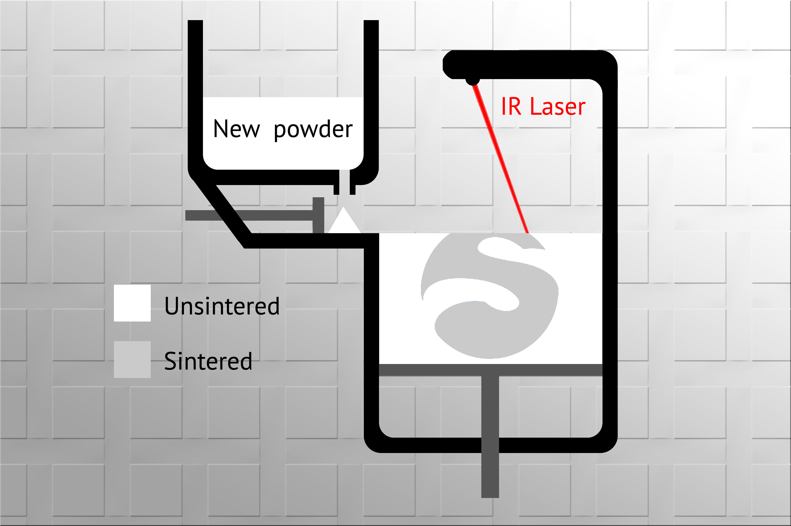

Selective Laser Sintering
Selective laser sintering (SLS) is the process of using a laser to harden a powder material, often nylon, into a 3d object. This method of printing is extremely expensive and dangerous to use in a household. However, object created through this process are extremely durable and high resolution.

Advantages
- High resolution prints, due to the precision of a laser
- Produces extremely durable prints because the nylon based materials it can use
- High efficiency when printing due to it being able to nest parts
Disadvantages
- Powder used is toxic and requires specialized personnel
- Machines cost over $100,000
- The powder used is expensive
For more info click here